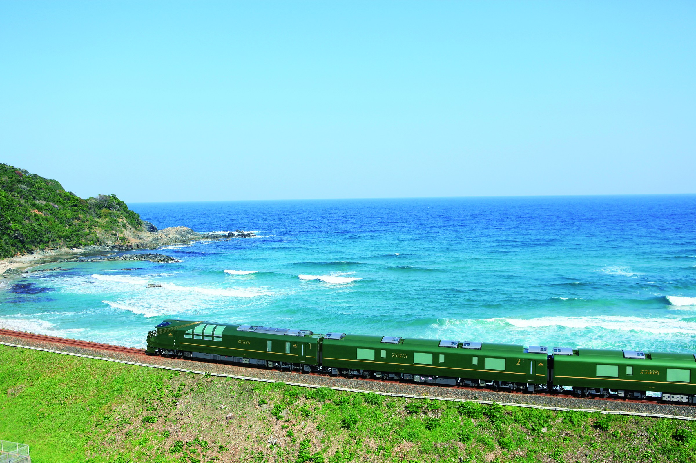
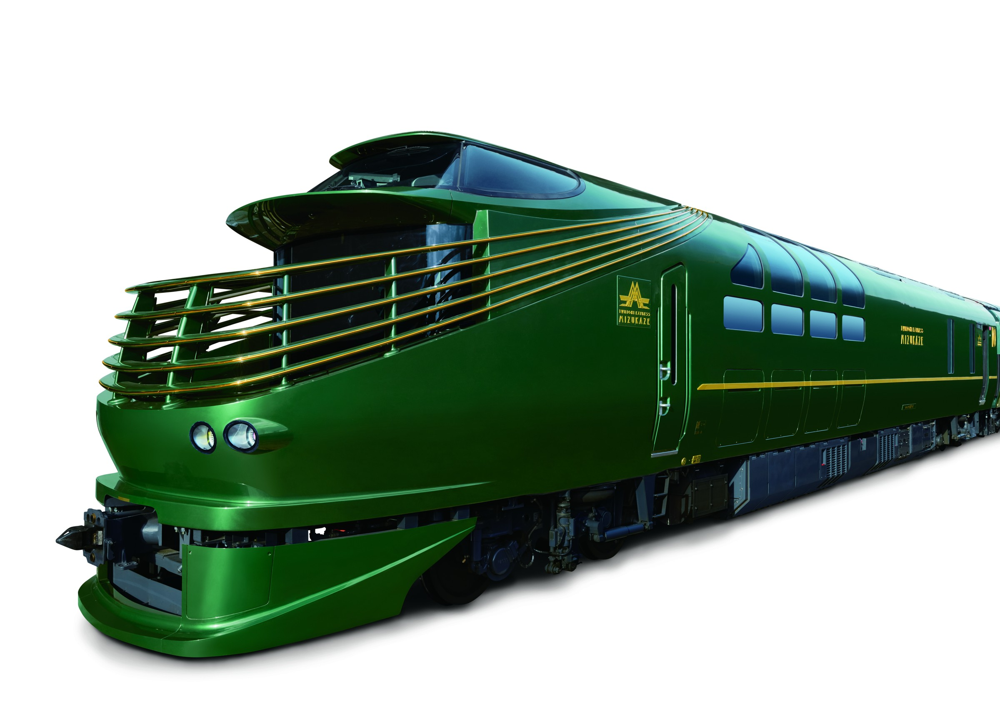
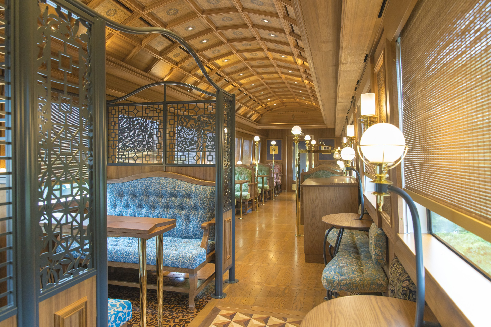
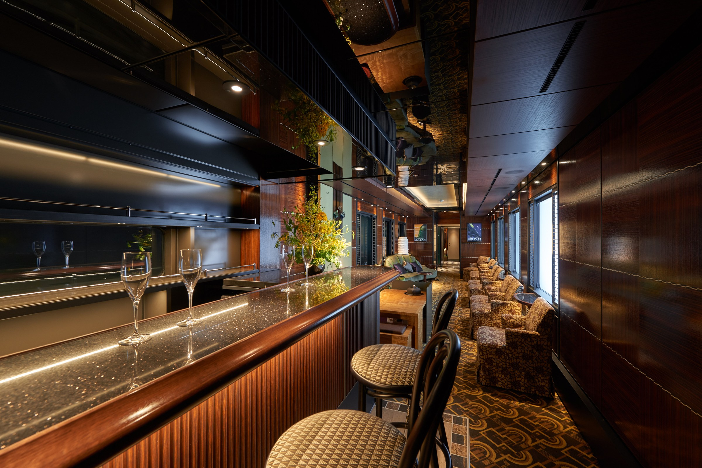
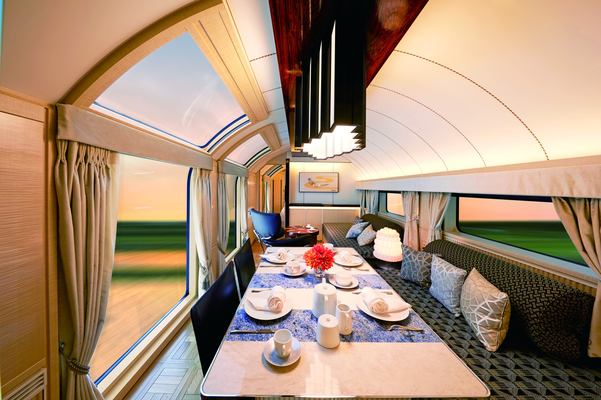

Префектура Окаяма · Сэтоути · поезда
«Мидзукадзэ»: роскошный экспресс вдоль Внутреннего Японского моря

Поездка, в которой ужин из нескольких перемен длится столько же, сколько пейзаж за окном. Ночной экспресс «Мидзукадзэ» превратил железную дорогу западной Японии в неспешное путешествие с остановками у древних столиц и старинных городов.
Поезд
Круиз на колёсах
Японское путешествие меняется, и одна из самых заметных перемен это круизные поезда: составы, в которых дорога сама становится целью. «Твайлайт Экспресс Мидзукадзэ» начал курсировать в июне 2017 года и остаётся флагманом этого жанра на западе страны.
Имя поезда складывается из двух слов: «мидзукадзэ» значит «благоприятный ветер», а «Мидзухо» старинное поэтичное имя Японии, «страна молодых колосьев». Поезд наследует легендарному спальному экспрессу «Твайлайт Экспресс», одному из главных символов японской ночной железной дороги, и идёт как его второе поколение по линиям Санъё и Санъин, мимо Внутреннего Японского моря и Японского моря. Есть и маршрут в один конец, редкость для круизных поездов, где обратная дорога обычно уже входит в цену поездки.

Дизайн
Ар-деко на рельсах
Интерьеры выдержаны в духе ар-деко: глубокие зелёные тона кузова, тёмное дерево, спокойный свет. Над вагонами работали архитектор, известный по крупным отелям Иокогамы, и промышленный дизайнер, и оба постарались, чтобы пассажиры разговаривали друг с другом: у длинной барной стойки с авторскими коктейлями стоят изогнутые стулья Тонета, и разговор заводится сам собой.
Обеденный вагон носит имя «Дайнер Плеяды», а морда поезда с круглыми фарами и пятью линиями повторяет черты предшественника. Всё это сознательная работа с памятью: пассажир едет не просто из города в город, а сквозь эпоху спальных экспрессов.


Каюта
Один вагон, один гость
Вершина состава это «Сьюит»: целый вагон с единственным номером. Лестница и коридор вынесены так, чтобы никто не пересекался с соседями, а внутри номер держит полностью частный мир: большой стол для трапез, открывающиеся окна приватного балкона и огромный витраж от стены до потолка, в котором отражается море. Редкий отель может предложить вид, который сам выбирает себе погоду.

Сегодня
Каким маршрутом поезд идёт сейчас
По состоянию на сентябрь 2026 года «Мидзукадзэ» продолжает ходить. Сейчас у поезда пять курсов: два односторонних по линии Санъин, два новых курса вокруг озера Бива с заездом в Сэтоути, запущенные весной 2026 года, и большой объездной «Сэтоути-Санъин»: по Санъё, Ямагути и Санъин линиям за три дня. Именно объездной курс проходит через префектуру Окаяму: в первый день поезд приходит в Курасики, где у пассажиров есть почти два часа на прогулку по старому кварталу Бикан с его белыми складами и каналами, после чего состав уходит на побережье Санъина.
Места разбирают по периодам за несколько месяцев вперёд, расписание и условия публикуются на официальном сайте, там же открывается продажа каждого нового периода.